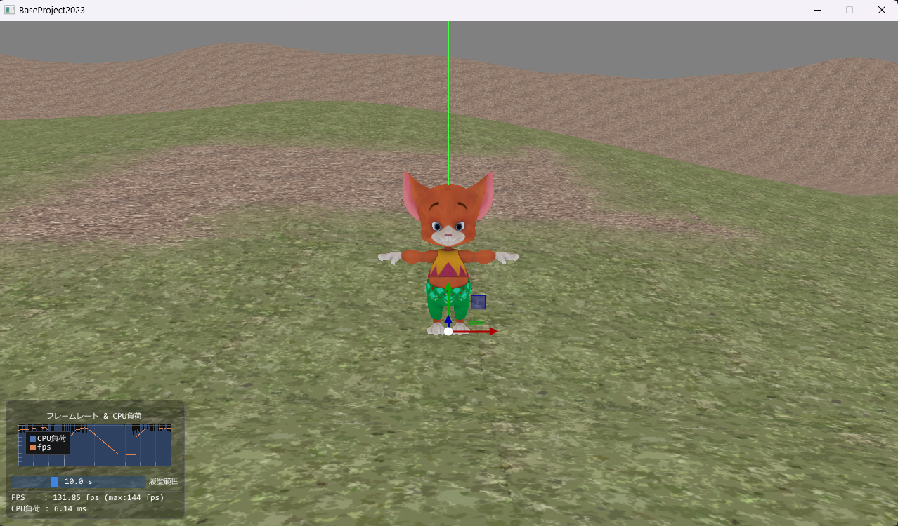
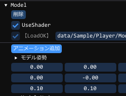

プレイヤーオブジェクト
この章は前章「GUIでカメラ(Camera)設定」で行った状態の続きとなります。地面の上にプレイヤーを置いてみましょう
まずカメラと同じく、オブジェクトを設置します(Object - Objectクラス を Create Object)
名前はPlayerとしておきましょう
地面と同じように ComponentModelを追加し、(ComponentModel - Model機能クラス を AddComponent)
Fileの部分を
data/Sample/Player/Model.mv1
とします。
キャラが地面にもぐっているようなので
位置のy座標を5にして少し上にあげましょう
Playerの設定は以下のようになっていれば成功です

まとめ
アニメーションの設定
モデルにアニメーションを追加してみましょう

モデルコンポーネント(Model)内にある「アニメーション追加」を押すと出てくる▶アニメーション開いてみましょうGUIの横幅も少し小さいので広げる必要があります。

今度は[Load]を押すと先ほどの状態まで戻ります
試してみましょう
※注意 何もない状態でセーブを押してしまうと、これまで作ったデータは上書きされて消えてしまいます